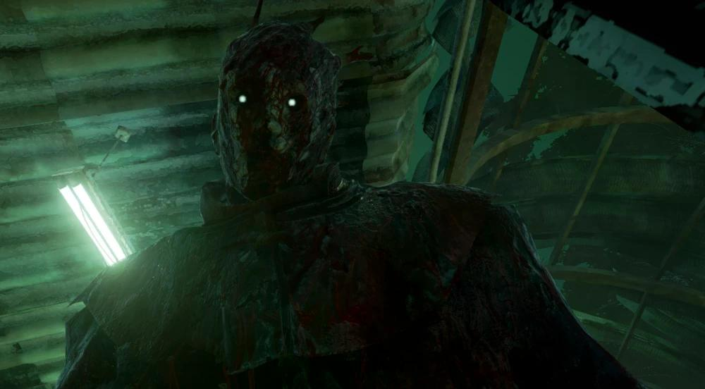
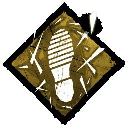
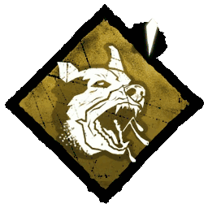
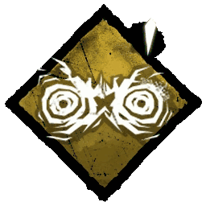
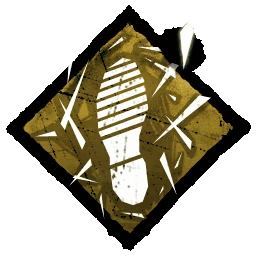
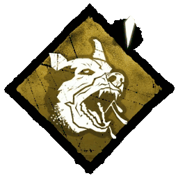
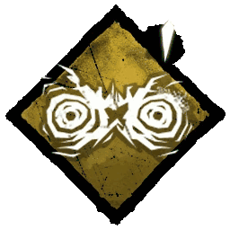

O Espectro
- Nome: Philip Ojomo
- Genero: Masculino
- Origem: Africano
- Poder: Sino das Lamentações
- Arma: Crânio de Azarov
- Velocidade de Movimento: 115% | 4.6m/s (Visível)
- Velocidade de Movimento Alt: 126% | 5.04m/s (Invisível)
- Raio de Terror: 32 metros
- DLC: Personagem Padrão
- Dublador: Filip Ivanovic
História do Personagem
Philip Ojomo veio para esse país sem nada mais que esperança para um novo começo. Ele ficou feliz quando um emprego no Ferro Velho Autohaven foi oferecido a ele. Um pequeno Ferro Velho onde policiais subornados viravam os olhos para os negócios obscuros que aconteciam por lá.
Ojomo não ligou. Ele viu atividades criminais de perto na sua terra natal e desde que ele não se envolvesse, ele deixava as coisas fluírem. Ele somente consertava carros e controlava o triturador. Algo que ele fazia muito bem. Um carro entrava e um pequeno cubo metálico saía.
Não foi até um dia sombrio que ele, por acidente, viu um pouco de sangue saindo de um dos carros não triturados. Quando ele abriu o porta-malas ele achou um homem jovem, amordaçado e com mãos amarradas com olhos cheios de pânico. Ojomo libertou o homem que correu dez passos antes do chefe de Ojomo pará-lo e cortar sua garganta. Como Ojomo queria respostas, explicaram a ele que ele não era nada mais que um simples executor já que mais ou menos todos carro tinha uma alma já que esse era o "serviço" que o ferro velho fazia para certos "clientes".
Ojomo perdeu a cabeça e foi balístico. Ele jogou se chefe no triturador e deixou-o comprimir lentamente, quando a cabeça saiu, Ojomo agarrou-a e empurrou a cabeça e a coluna vertebral para fora do corpo. Então ele saiu de lá e nunca mais foi visto.
Habilidades
 




